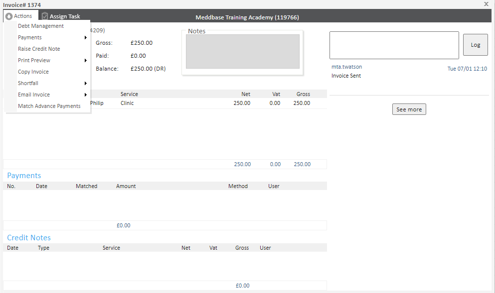
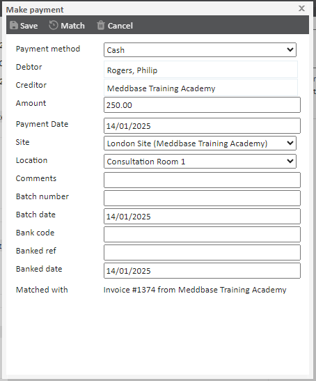
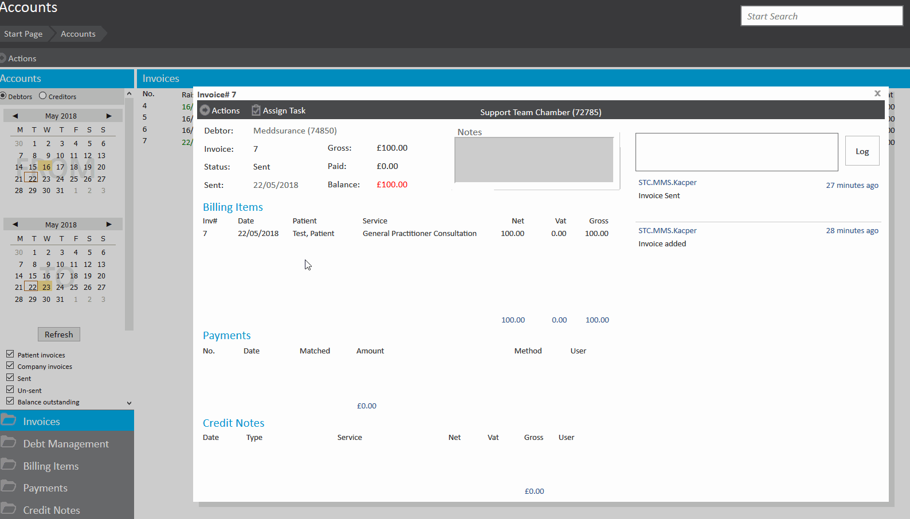
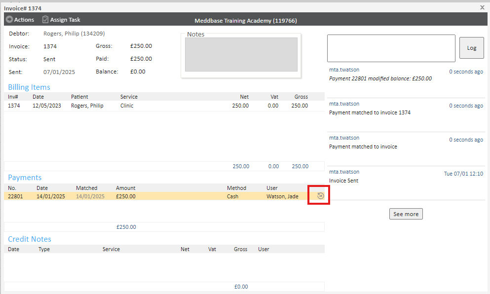
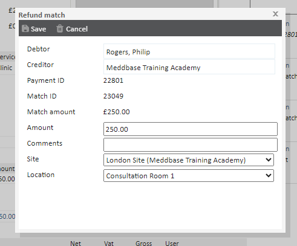
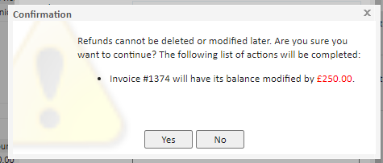
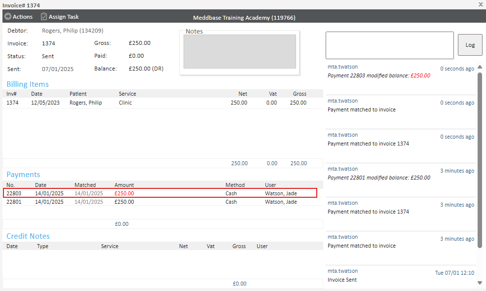
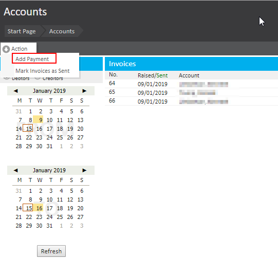
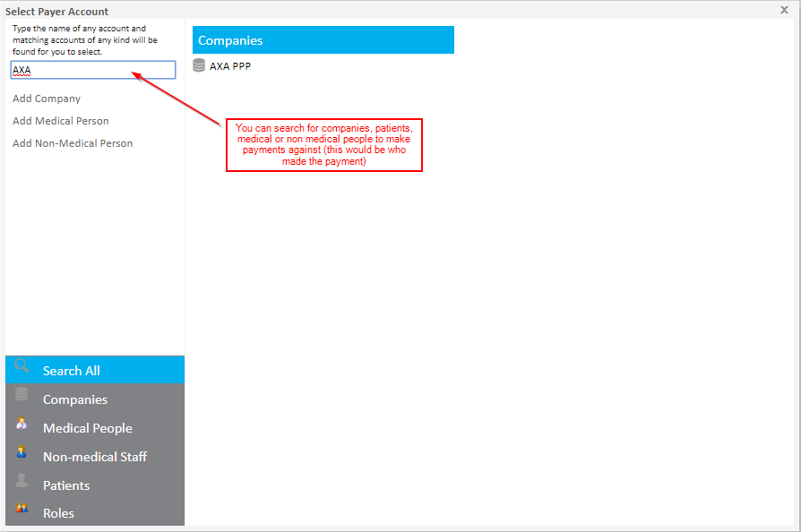
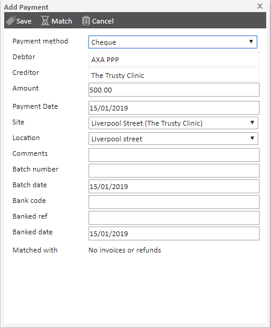

When managing invoices, it’s essential to record payments accurately. This ensures the system reflects the current balance and maintains a clear audit trail. Once an invoice has been marked as sent, you can add payments, issue credit notes, or manage other actions related to the invoice.
This article explains how to add a payment to an invoice, including handling incorrect payments and recording payments not tied to a specific invoice.
Once an invoice has been marked as sent, you may proceed to add a payment to the invoice.
Go to the invoice you wish to add a payment to and mark the invoice as sent if it is not already. Go to the ‘Actions’ button where you will find a new list of options including:

Click the ‘Make Payment’ button to load the payment dialogue box.

This dialogue allows you to add a wealth of information regarding the payment including:
Fill in the details as is appropriate and click ‘Save’ to save the payment.
Once saved you will be presented with a receipt which can be printed for a customer copy. Close this dialogue to show that the invoice now reflects the payment and updated total.

If you make an incorrect payment you can either refund the payment by clicking the refund button to the side of the payment.

Clicking this will present a dialogue box to modify the refunded amount. Click save to progress onto the next step, where you will see a warning to confirm you wish to proceed with the refund.


Click yes and the refund will reflect on the invoice, under the Payment section.

If a company or a patient makes a payment that is not for one specific invoice you can create a separate payment for that, you can then go through and match that payment to different invoices.
To do this go to Start Page > Accounts > In the top left hand corner select "Actions" and "Add Payment".

You will then get a pop up where you can search a company or another entity, in this case I am searching for AXA company within my chamber:

Once you have selected who the payment is from you will receive the following screen:

As seen earlier in this article you can add a bunch of information against this payment such as the method of payment, the date of payment, the amount comments and more.
If you wish to match this payment against multiple invoices you can see how to do that in this article.